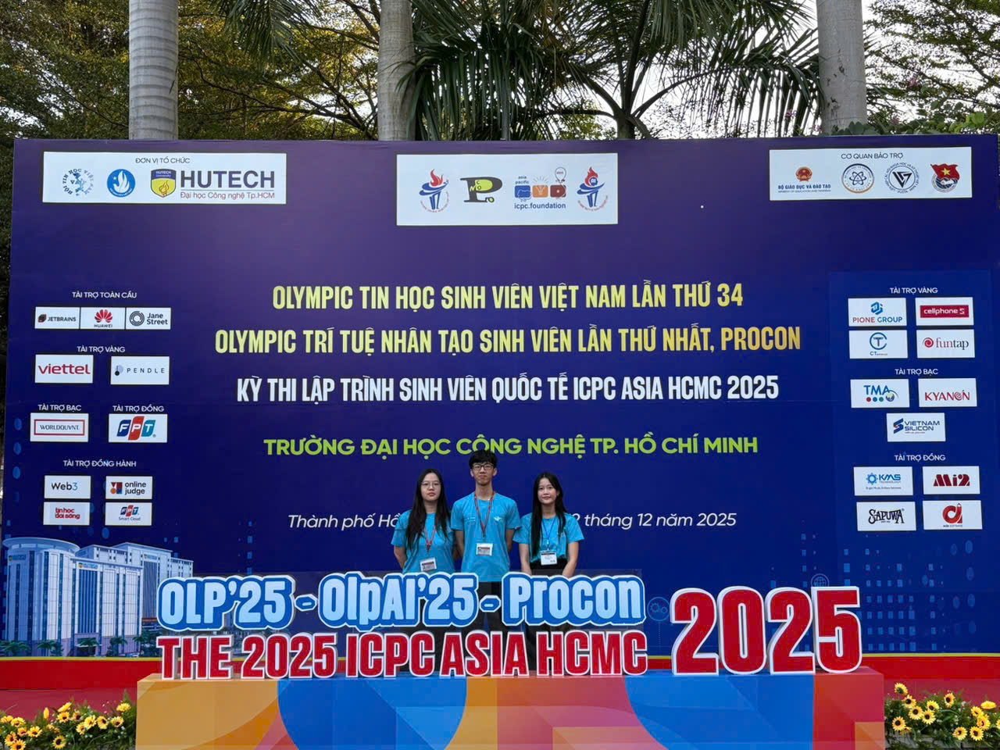

If I had to describe my 2025 in one word, it would probably be: "risky."
I'm a student at FTU — a university best known for economics. But this year, I decided to step out of that comfort zone and try AI and competitive programming, two things I had almost no background in.
Starting from (almost) zero in 2 months
I only started learning C++ and competitive programming about 2 months before the Informatics Olympiad.
Not casually, but more like diving straight into problems, reading solutions, not understanding anything... and then reading them again. There were days I spent hours just trying to understand a simple greedy or brute force problem.
At that time, it was very clear:
- I coded slower than others
- My thinking wasn't as sharp as people with more experience
- And most importantly... it was really easy to feel discouraged
But I chose to keep going, slowly but consistently. Just a little progress every day.
In the end, I got an Encouragement Prize at the Informatics Olympiad. It's not a big achievement, but for me, it proved that:
2 months of serious effort can actually make a difference.
Olympic AI — a lot of "firsts"
Olympic AI 2025 was the first time this competition was ever organized. And for me, almost everything about it was a "first":
- My first real AI problem
- My first time training models seriously
- My first time competing in a contest where... even the format wasn't fully familiar yet
Since it was the first year, we faced quite a few challenges:
- Infrastructure and format weren't fully stable: submissions, evaluations, and testing didn't always run smoothly
- Unclear information at times: we had to figure out many things on our own
- No clear benchmark: we didn't really know if we were doing well or not
On top of that, our team didn't come from a particularly strong AI background. So the whole process felt like learning while doing, and sometimes just guessing what to try next.
There were many moments when things didn't work:
- Models didn't improve
- Ideas failed
- Deadlines kept getting closer
But we kept going. Not because we were sure we would win, but because we had already come this far.
Final results:
- Third Prize — Northern Regional Round
- Encouragement Prize — National Round
And honestly, the most important thing wasn't the prize. It was the feeling that:
I managed to do something I once thought was far beyond me.
Informatics Olympiad — a different kind of challenge
Alongside AI, I also competed in the Informatics Olympiad (non-specialized track).
And honestly... this was mentally intense.
Competitive programming requires a very different kind of thinking: fast, precise, and highly logical. It's completely normal to read a problem and have no idea where to start.
I received an Encouragement Prize — not outstanding, but enough to tell myself: I can learn this, I just need more time.
Looking back: I wasn't "good" from the start
I wasn't someone who was naturally good at coding or AI. I didn't have much preparation time either.
But I think the most important thing I had this year was: the persistence to keep going long enough to see progress.
- If I didn't understand something, I read it again
- If I failed, I tried again
- If I was slower than others, I accepted it and continued
If you feel like I did before
If you're thinking:
- "I study economics, should I even try tech?"
- "I'm starting too late"
- "I'm not good enough"
I've thought all of those things too.
But after this year, I realized: no one starts as "good enough."
2025 wasn't a perfect year for me. But it was the year I dared to try, to fail, and to keep going.

And honestly, that's more than enough.